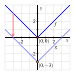
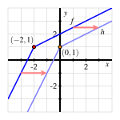
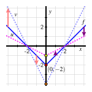
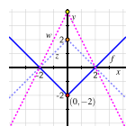
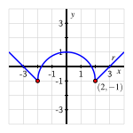
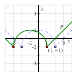
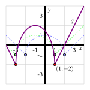
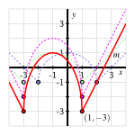
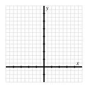

¿Cómo se relaciona el gráfico de \(y = g(x) = af(x-b) + c\) con el gráfico de \(y = f(x)\text{?}\)
¿Qué queremos decir con “transformaciones” de una función dada \(f\text{?}\) ¿Cómo son ejemplos de transformaciones las traslaciones y los estiramientos verticales de una función?
En nuestra preparación para el cálculo, aspiramos a entender las funciones desde una amplia gama de perspectivas y familiarizarnos con una biblioteca de funciones básicas. Hasta ahora, dos familias básicas de funciones que hemos considerado son las funciones lineales y las funciones cuadráticas, las más simples de las cuales son \(L(x) = x\) y \(Q(x) = x^2\text{.}\) A medida que avancemos, nos esforzaremos por entender una función “madre” como el miembro más fundamental de una familia de funciones, así como cómo otras funciones similares pero más complicadas son el resultado de transformar la función madre.
Informalmente, una transformación de una función dada es un proceso algebraico por el cual cambiamos la función a una función relacionada que tiene la misma forma fundamental, pero que puede estar desplazada, reflejada y/o estirada de manera sistemática. Por ejemplo, entre todas las funciones cuadráticas, la más simple es la función madre \(Q(x) = x^2\text{,}\) pero cualquier otra función cuadrática, como \(g(x) = -3(x-5)^2 + 4\text{,}\) también puede entenderse en relación con la función madre. Decimos que “\(g\) es una transformación de \(Q\text{.}\)”
En Preview Activity 1.8.1, investigamos los efectos de las constantes \(a\text{,}\)\(b\text{,}\) y \(c\) en la generación de la función \(g(x) = af(x-b) + c\) en el contexto de ya conocer la función \(f\text{.}\)
Preview Activity1.8.1.
Abre un nuevo gráfico en Desmos y define la función \(f(x) = x^2\text{.}\) Ajusta la ventana para que el rango sea \(-4 \le x \le 4\) y \(-10 \le y \le 10\text{.}\)
En Desmos, define la función \(g(x) = f(x) + a\text{.}\) (Es decir, en Desmos en la línea 2, introduce g(x) = f(x) + a.) Te aparecerá una opción para añadir un control deslizante para \(a\text{.}\) Hazlo.
Explora moviendo el control deslizante para \(a\) y escribe al menos una oración para describir el efecto que tiene cambiar el valor de \(a\) en el gráfico de \(g\text{.}\)
Ahora, define la función \(h(x) = f(x-b)\text{.}\) (Es decir, en Desmos en la línea 4, introduce h(x) = f(x-b) y añade el control deslizante para \(b\text{.}\))
Mueve el control deslizante para \(b\) y escribe al menos una oración para describir el efecto que tiene cambiar el valor de \(b\) en el gráfico de \(h\text{.}\)
Ahora define la función \(p(x) = cf(x)\text{.}\) (Es decir, en Desmos en la línea 6, introduce p(x) = cf(x) y añade el control deslizante para \(c\text{.}\))
Mueve el control deslizante para \(c\) y escribe al menos una oración para describir el efecto que tiene cambiar el valor de \(c\) en el gráfico de \(p\text{.}\) En particular, cuando \(c = -1\text{,}\) ¿cómo se relaciona el gráfico de \(p\) con el gráfico de \(f\text{?}\)
Finalmente, haz clic en los íconos junto a \(g\text{,}\)\(h\) y \(p\) para ocultarlos temporalmente, y vuelve a la Línea 1 y cambia tu fórmula para \(f\text{.}\) Puedes hacerla como quieras, pero prueba algo como \(f(x) = x^2 + 2x + 3\) o \(f(x) = x^3 - 1\text{.}\) Luego, investiga con los controles deslizantes \(a\text{,}\)\(b\) y \(c\) para ver los efectos en \(g\text{,}\)\(h\) y \(p\) (mostrándolos nuevamente según corresponda). Escribe un par de oraciones para describir tus observaciones de tus exploraciones.
Dada una función \(y = f(x)\) y un número real \(a\text{,}\) la función transformada \(y = g(x) = f(x) + a\) es una traslación vertical del gráfico de \(f\text{.}\) Es decir, cada punto \((x,f(x))\) en el gráfico de \(f\) se desplaza verticalmente al punto correspondiente \((x,f(x)+a)\) en el gráfico de \(g\text{.}\)
Como encontramos en nuestras exploraciones de Desmos en la actividad previa, es especialmente útil ver los efectos de la traslación vertical dinámicamente.
Instructions.
Mueve el deslizador 1
Muchísimas gracias al increíble David Austin por hacer estos gráficos interactivos en javascript para el texto.
haciendo clic y arrastrando el punto rojo para ver cómo cambiar \(a\) afecta el gráfico de \(y = f(x) + a\text{,}\) que aparece en azul. El gráfico de \(y = f(x)\) aparecerá en gris y permanecerá fijo.
Figure1.8.1.Demostración interactiva de traslaciones verticales (solo en la versión HTML).
En una traslación vertical, el gráfico de \(g\) se encuentra por encima del gráfico de \(f\) siempre que \(a \gt 0\text{,}\) mientras que el gráfico de \(g\) se encuentra por debajo del gráfico de \(f\) siempre que \(a \lt 0\text{.}\) En Figure 1.8.2, vemos la función original \(f(x) = |x|\) junto con la transformación resultante \(g(x) = f(x)-3\text{,}\) que es un desplazamiento vertical hacia abajo de \(3\) unidades. Nota particularmente que cada punto en el gráfico original de \(f\) se mueve \(3\) unidades hacia abajo; a menudo indicamos esto con una flecha y etiquetando al menos un punto clave en cada gráfico.
Figure1.8.2.A vertical translation, \(g\text{,}\) of the function \(y = f(x) = |x|\text{.}\)
Figure1.8.3.A horizontal translation, \(h\text{,}\) of a different function \(y = f(x)\text{.}\)
En Figura 1.8.3, vemos una traslación horizontal de la función original \(f\) que desplaza su gráfica \(2\) unidades a la derecha para formar la función \(h\text{.}\) Observa que \(f\) no es una función básica familiar; las transformaciones pueden aplicarse a cualquier función original que deseemos.
Desde un punto de vista algebraico, las traslaciones horizontales son un poco más complicadas que las verticales. Dado \(y = f(x)\text{,}\) si definimos la función transformada \(y = h(x) = f(x-b)\text{,}\) observa que
Esto muestra que para una entrada de \(x+b\) en \(h\text{,}\) la salida de \(h\) es la misma que la salida de \(f\) que corresponde a una entrada de simplemente \(x\text{.}\) Por lo tanto, en Figure 1.8.3, la fórmula para \(h\) en términos de \(f\) es \(h(x) = f(x-2)\text{,}\) ya que una entrada de \(x+2\) en \(h\) resultará en la misma salida que una entrada de \(x\) en \(f\text{.}\) Por ejemplo, \(h(2) = f(0)\text{,}\) lo cual se alinea con la gráfica de \(h\) siendo un desplazamiento de la gráfica de \(f\) a la derecha por \(2\) unidades.
Nuevamente, es instructivo ver los efectos de la traslación horizontal de manera dinámica.
Instructions.
Mueve el deslizador haciendo clic y arrastrando el punto rojo para ver cómo cambiar \(b\) afecta la gráfica de \(y = f(x-b)\text{,}\) que aparece en azul. La gráfica de \(y = f(x)\) aparecerá en gris y permanecerá fija.
Figure1.8.4.Demostración interactiva de traslaciones horizontales (solo en la versión HTML).
En general, tenemos el siguiente principio general.
Horizontal Translation of a Function.
Dada una función \(y = f(x)\) y un número real \(b\text{,}\) la función transformada \(y = h(x) = f(x-b)\) es una traslación horizontal del gráfico de \(f\text{.}\) Es decir, cada punto \((x,f(x))\) en el gráfico de \(f\) se desplaza horizontalmente al punto correspondiente \((x+b,f(x))\) en el gráfico de \(g\text{.}\)
Enfatizamos que en la traslación horizontal \(h(x) = f(x-b)\text{,}\) si \(b \gt 0\) el gráfico de \(h\) se encuentra \(b\) unidades a la derecha de \(f\text{,}\) mientras que si \(b \lt 0\text{,}\)\(h\) se encuentra \(b\) unidades a la izquierda de \(f\text{.}\)
En los mismos ejes que la gráfica de \(y = r(x)\text{,}\) dibuja los siguientes gráficos: \(y = g(x) = r(x) + 2\text{,}\)\(y = h(x) = r(x+1)\text{,}\) y \(y = f(x) = r(x+1) + 2\text{.}\) Asegúrate de etiquetar el punto en cada una de \(g\text{,}\)\(h\text{,}\) y \(f\) que corresponde a \((-2,-1)\) en la gráfica original de \(r\text{.}\) Además, escribe una oración para explicar las transformaciones generales que han resultado en \(g\text{,}\)\(h\text{,}\) y \(f\text{.}\)
En los mismos ejes que la gráfica de \(y = s(x)\text{,}\) dibuja los siguientes gráficos: \(y = k(x) = s(x) - 1\text{,}\)\(y = j(x) = s(x-2)\text{,}\) y \(y = m(x) = s(x-2) - 1\text{.}\) Asegúrate de etiquetar el punto en cada una de \(k\text{,}\)\(j\text{,}\) y \(m\) que corresponde a \((-2,-3)\) en la gráfica original de \(s\text{.}\) Además, escribe una oración para explicar las transformaciones generales que han resultado en \(k\text{,}\)\(j\text{,}\) y \(m\text{.}\)
Ahora considera la función \(q(x) = x^2\text{.}\) Determina una fórmula para la función que se da por \(p(x) = q(x+3) - 4\text{.}\) ¿Cómo es \(p\) una transformación de \(q\text{?}\)
Subsection1.8.2Estiramientos verticales y reflexiones
Hasta ahora, hemos visto los posibles efectos de añadir un valor constante a la salida de una función (es decir, la nueva expresión \(f(x)+a\) si se nos da \(f(x)\)) y de añadir un valor constante a la entrada de una función (es decir, la nueva expresión \(f(x+b)\text{,}\) dada \(f(x)\)). Cada una de estas acciones resulta en una traslación del gráfico de la función (ya sea vertical u horizontalmente), pero dejando el gráfico igual en otros aspectos. A continuación, investigamos los efectos de multiplicar la salida de la función por una constante.
Example1.8.7.
Dada la función madre \(y = f(x)\) representada en Figure 1.8.8, ¿cuáles son los efectos de la transformación \(y = v(x) = cf(x)\) para varios valores de \(c\text{?}\)
Solution.
Primero investigamos los efectos de \(c = 2\) y \(c = \frac{1}{2}\text{.}\) Para \(v(x) = 2f(x)\text{,}\) el impacto algebraico de esta transformación es que cada salida de \(f\) se multiplica por \(2\text{.}\) Esto significa que la única salida que no cambia es cuando \(f(x) = 0\text{,}\) mientras que cualquier otro punto en el gráfico de la función original \(f\) se estirará verticalmente alejándose del eje \(x\) por un factor de \(2\text{.}\) Podemos ver esto en Figure 1.8.8, donde cada punto en el gráfico azul oscuro original se transforma en un punto correspondiente cuyo \(y\)-coordenada es dos veces más grande, como se indica parcialmente por las flechas rojas.
Figure1.8.8.La función madre \(y = f(x)\) junto con dos estiramientos verticales diferentes, \(v\) y \(u\text{.}\)
Figure1.8.9.La función madre \(y = f(x)\) junto con una reflexión vertical, \(z\text{,}\) y un estiramiento correspondiente, \(w\text{.}\)
En contraste, la transformación \(u(x) = \frac{1}{2}f(x)\) se estira verticalmente por un factor de \(\frac{1}{2}\text{,}\) lo que tiene el efecto de comprimir el gráfico de \(f\) hacia el eje \(x\text{,}\) ya que todas las salidas de la función \(f\) se multiplican por \(\frac{1}{2}\text{.}\) Por ejemplo, el punto \((0,-2)\) en el gráfico de \(f\) se transforma en el punto \((0,-1)\) en el gráfico de \(u\text{,}\) y otros se transforman como se indica con las flechas moradas.
Para considerar la situación donde \(c \lt 0\text{,}\) primero consideramos el caso más simple donde \(c = -1\) en la transformación \(z(x) = -f(x)\text{.}\) Aquí el impacto de la transformación es multiplicar cada salida de la función madre \(f\) por \(-1\text{;}\) esto toma cualquier punto de la forma \((x,y)\) y lo transforma en \((x,-y)\text{,}\) lo que significa que estamos reflejando cada punto en el gráfico de la función original a través del eje \(x\) para generar el gráfico de la función resultante. Esto se demuestra en Figure 1.8.9 donde \(y = z(x)\) es la reflexión de \(y = f(x)\) a través del eje \(x\text{.}\)
Finalmente, también investigamos el caso donde \(c = -2\text{,}\) lo que genera \(y = w(x) = -2f(x)\text{.}\) Aquí podemos pensar en \(-2\) como \(-2 = 2(-1)\text{:}\) el efecto de multiplicar por \(-1\) primero refleja el gráfico de \(f\) a través del eje \(x\) (resultando en \(z\)), y luego multiplicar por \(2\) estira el gráfico de \(z\) verticalmente para resultar en \(w\text{,}\) como se muestra en Figure 1.8.9.
Al igual que con la traslación vertical y horizontal, es particularmente instructivo ver los efectos del escalado vertical de manera dinámica.
Instructions.
Mueve el control deslizante haciendo clic y arrastrando el punto rojo para ver cómo cambiar \(c\) afecta el gráfico de \(y = cf(x)\text{,}\) que se muestra en azul. El gráfico de \(y = f(x)\) aparecerá en gris y permanecerá fijo.
Figure1.8.10.Demostración interactiva del escalado vertical (solo en la versión HTML).
Resumimos y generalizamos nuestras observaciones de Example 1.8.7 y Figure 1.8.10 de la siguiente manera.
Escalado Vertical de una Función.
Dada una función \(y = f(x)\) y un número real \(c \gt 0\text{,}\) la función transformada \(y = v(x) = cf(x)\) es un estiramiento vertical del gráfico de \(f\text{.}\) Cada punto \((x,f(x))\) en el gráfico de \(f\) se estira verticalmente al punto correspondiente \((x,cf(x))\) en el gráfico de \(v\text{.}\) Si \(0 \lt c \lt 1\text{,}\) el gráfico de \(v\) es una compresión de \(f\) hacia el eje \(x\text{;}\) si \(c \gt 1\text{,}\) el gráfico de \(v\) es un estiramiento de \(f\) alejándose del eje \(x\text{.}\) Los puntos donde \(f(x) = 0\) no se ven afectados por la transformación.
Dada una función \(y = f(x)\) y un número real \(c \lt 0\text{,}\) la función transformada \(y = v(x) = cf(x)\) es una reflexión del gráfico de \(f\) a través del eje \(x\) seguida de un estiramiento vertical por un factor de \(|c|\text{.}\)
En los mismos ejes que el gráfico de \(y = r(x)\text{,}\) dibuja los siguientes gráficos: \(y = g(x) = 3r(x)\) y \(y = h(x) = \frac{1}{3}r(x)\text{.}\) Asegúrate de etiquetar el punto en \(g\) y \(h\) que corresponde al punto \((-2,-1)\) en el gráfico original de \(r\text{.}\) Además, escribe una oración para explicar las transformaciones generales que han resultado en \(g\) y \(h\) a partir de \(r\text{.}\)
En los mismos ejes que el gráfico de \(y = s(x)\text{,}\) dibuja los siguientes gráficos: \(y = k(x) = -s(x)\) y \(y = j(x) = -\frac{1}{2}s(x)\text{.}\) Asegúrate de etiquetar el punto en \(k\) y \(j\) que corresponde al punto \((-2,-3)\) en el gráfico original de \(s\text{.}\) Además, escribe una oración para explicar las transformaciones generales que han resultado en \(k\) y \(j\) a partir de \(s\text{.}\)
En las copias adicionales de las dos figuras a continuación, dibuja los gráficos de las siguientes funciones transformadas: \(y = m(x) = 2r(x+1)-1\) (a la izquierda) y \(y = n(x) = \frac{1}{2}s(x-2)+2\text{.}\) Como antes, asegúrate de etiquetar un punto clave en cada gráfico que corresponda al punto etiquetado en la función madre original.
Describe con palabras cómo la función \(y = m(x) = 2r(x+1)-1\) es el resultado de tres transformaciones elementales de \(y = r(x)\text{.}\) ¿Importa el orden en el que ocurren estas transformaciones? ¿Por qué o por qué no?
Subsection1.8.3Combinando desplazamientos y estiramientos: por qué el orden a veces importa
En la pregunta final de Activity 1.8.3, consideramos la transformación \(y = m(x) = 2r(x+1)-1\) de la función original \(r\text{.}\) Hay tres transformaciones básicas diferentes involucradas: un desplazamiento vertical de \(1\) unidad hacia abajo, un desplazamiento horizontal de \(1\) unidad hacia la izquierda y un estiramiento vertical por un factor de \(2\text{.}\) Para entender el orden en que se aplican estas transformaciones, es esencial recordar que una función es un proceso que convierte entradas en salidas.
Por la regla algebraica para \(m\text{,}\)\(m(x) = 2r(x+1)-1\text{.}\) En palabras, esto significa que dado un valor de entrada \(x\) para \(m\text{,}\) hacemos los siguientes procesos en este orden particular:
sumar \(1\) a \(x\) y luego aplicar la función \(r\) a la cantidad \(x+1\text{;}\)
multiplicar el resultado de \(r(x+1)\) por \(2\text{;}\)
restar \(1\) del resultado de \(2r(x+1)\text{.}\)
Estos tres pasos corresponden a tres transformaciones básicas: (1) desplazar la gráfica de \(r\) a la izquierda por \(1\) unidad; (2) estirar la gráfica resultante verticalmente por un factor de \(2\text{;}\) (3) desplazar la gráfica resultante verticalmente por \(-1\) unidades. Podemos ver el impacto gráfico de estos pasos algebraicos tomándolos uno a la vez. En Figure 1.8.14, vemos la función \(p\) que resulta de un desplazamiento de \(1\) unidad a la izquierda de la función principal en Figure 1.8.13. (Cada vez que tomamos un paso adicional, desatenderemos la función anterior haciéndola aparecer en un color más claro y con líneas discontinuas.)
Figure1.8.13.La función madre \(y = r(x)\text{.}\)
Figure1.8.14.La función madre \(y = r(x)\) junto con el desplazamiento horizontal \(y = p(x) = r(x+1)\text{.}\)
Continuando, ahora consideramos la función \(q(x) = 2p(x) = 2r(x+1)\text{,}\) lo que resulta en un estiramiento vertical de \(p\) alejándose del eje \(x\) por un factor de \(2\text{,}\) como se ve en Figure 1.8.15.
Figure1.8.15.La función \(y = q(x) = 2p(x) = 2r(x+1)\) junto con las gráficas de \(p\) y \(r\text{.}\)
Figure1.8.16.La función \(y = m(x) = q(x)-1 = 2r(x+1) - 1\) junto con las gráficas de \(q\text{,}\)\(p\) y \(r\text{.}\)
Finalmente, llegamos a \(y = m(x) = 2r(x+1) - 1\) restando \(1\) de \(q(x) = 2r(x+1)\text{;}\) esto, por supuesto, es un desplazamiento vertical de \(-1\) unidades, y produce la gráfica de \(m\) mostrada en rojo en Figure 1.8.16. También podemos rastrear el punto \((2,-1)\) en la función madre original: primero se mueve a la izquierda \(1\) unidad a \((1,-1)\text{,}\) luego se estira verticalmente por un factor de \(2\) alejándose del eje \(x\) a \((1,-2)\text{,}\) y finalmente se desplaza \(1\) unidad hacia abajo al punto \((1,-3)\text{,}\) que vemos en la gráfica de \(m\text{.}\)
Mientras que hay algunas transformaciones que se pueden ejecutar en cualquier orden (como una combinación de una traslación horizontal y una traslación vertical, como se ve en la parte (b) de Activity 1.8.2), en otras situaciones el orden importa. Por ejemplo, en nuestra discusión anterior, tenemos que aplicar el estiramiento vertical antes de aplicar el desplazamiento vertical. Algebraicamente, esto es porque
La cantidad \(2r(x+1) - 1\) multiplica la función \(r(x+1)\) por \(2\) primero (el estiramiento) y luego sigue el desplazamiento vertical; la cantidad \(2[r(x+1) - 1]\) desplaza la función \(r(x+1)\) hacia abajo \(1\) unidad primero, y luego ejecuta un estiramiento vertical por un factor de \(2\text{.}\) En el último escenario, el punto \((1,-1)\) que se encuentra en \(r(x+1)\) se transforma primero a \((1,-2)\) y luego a \((1,-4)\text{,}\) lo cual no es lo mismo que el punto \((1,-3)\) que se encuentra en \(m(x) = 2r(x+1) - 1\text{.}\)
Dibuja una gráfica precisa de la transformación \(y = p(x) = -\frac{1}{2}f(x-1)+2\text{.}\) Escribe al menos una oración para explicar cómo desarrollaste la gráfica de \(p\text{,}\) e identifica el punto en \(p\) que corresponde al punto original \((-2,2)\) en la gráfica de \(f\text{.}\)
Dibuja una gráfica precisa de la transformación \(y = q(x) = 2g(x+0.5)-0.75\text{.}\) Escribe al menos una oración para explicar cómo desarrollaste la gráfica de \(q\text{,}\) e identifica el punto en \(q\) que corresponde al punto original \((1.5,1.5)\) en la gráfica de \(g\text{.}\)
¿Es la función \(y = r(x) = \frac{1}{2}(-f(x-1) - 4)\) la misma función que \(p\) o diferente? ¿Por qué? Explica de dos maneras diferentes: discute las similitudes y diferencias algebraicas entre \(p\) y \(r\text{,}\) y también discute cómo cada una es una transformación de \(f\text{.}\)
Encuentra una fórmula para una función \(y = s(x)\) (en términos de \(g\)) que represente esta transformación de \(g\text{:}\) un desplazamiento horizontal de \(1.25\) unidades a la izquierda, seguido de una reflexión a través del eje \(x\) y un estiramiento vertical por un factor de \(2.5\) unidades, seguido de un desplazamiento vertical de \(1.75\) unidades. Dibuja una gráfica precisa y etiquetada de \(s\) en los siguientes ejes junto con la función madre dada \(g\text{.}\)
Subsection1.8.4Resumen
El gráfico de \(y = g(x) = af(x-b) + c\) está relacionado con el gráfico de \(y = f(x)\) por una secuencia de transformaciones. Primero, hay un desplazamiento horizontal de \(|b|\) unidades a la derecha (\(b \gt 0\)) o a la izquierda (\(b \lt 0\)). Luego, hay un estiramiento vertical por un factor de \(|a|\) (junto con una reflexión a través de \(y = 0\) en el caso donde \(a \lt 0\)). Finalmente, hay un desplazamiento vertical de \(c\) unidades.
Una transformación de una función dada \(f\) es un proceso por el cual el gráfico puede ser desplazado o estirado para generar una nueva función relacionada con la misma forma fundamental. En esta sección consideramos cuatro formas diferentes en que esto puede ocurrir: a través de una traslación horizontal (desplazamiento), a través de una reflexión a través de la línea \(y = 0\) (el eje \(x\)), a través de un escalado vertical (estiramiento) que multiplica cada salida de una función por la misma constante, y a través de una traslación vertical (desplazamiento). Cada uno de estos procesos individuales es en sí mismo una transformación, y pueden combinarse de varias maneras para crear transformaciones más complicadas.
Exercises1.8.5Exercises
1.
Sea \(f(x) = x^2\text{.}\)
Sea \(g(x) = f(x) + 5\text{.}\) Determina \(AV_{[-3,-1]}\) y \(AV_{[2,5]}\) para ambos \(f\) y \(g\text{.}\) ¿Qué observas? ¿Por qué ocurre este fenómeno?
Sea \(h(x) = f(x-2)\text{.}\) Para \(f\text{,}\) recuerda que determinaste \(AV_{[-3,-1]}\) y \(AV_{[2,5]}\) en (a). Además, determina \(AV_{[-1,1]}\) y \(AV_{[4,7]}\) para \(h\text{.}\) ¿Qué observas? ¿Por qué ocurre este fenómeno?
Sea \(k(x) = 3f(x)\text{.}\) Determina \(AV_{[-3,-1]}\) y \(AV_{[2,5]}\) para \(k\text{,}\) y compara los resultados con tus cálculos anteriores de \(AV_{[-3,-1]}\) y \(AV_{[2,5]}\) para \(f\text{.}\) ¿Qué observas? ¿Por qué ocurre este fenómeno?
Finalmente, sea \(m(x) = 3f(x-2) + 5\text{.}\) Sin hacer ningún cálculo, ¿qué crees que será cierto sobre la relación entre \(AV_{[-3,-1]}\) para \(f\) y \(AV_{[-1,1]}\) para \(m\text{?}\) ¿Por qué? Después de hacer tu conjetura, realiza los cálculos apropiados para ver si tu intuición es correcta.
2.
Considera la función madre \(y = f(x) = x\text{.}\)
Considera la función lineal en forma punto-pendiente dada por \(y = L(x) = -4(x-3) + 5\text{.}\) ¿Cuál es la pendiente de esta línea? ¿Cuál es el punto más obvio que se encuentra en la línea?
¿Cómo puede verse la función \(L\) dada en (a) como una transformación de la función madre \(f\text{?}\) Explica los roles de \(3\text{,}\)\(-4\) y \(5\text{,}\) respectivamente.
Explica por qué cualquier línea no vertical de la forma \(P(x) = m(x-x_0) + y_0\) puede considerarse como una transformación de la función madre \(f(x) = x\text{.}\) Discute específicamente la(s) transformación(es) involucrada(s).
Encuentra una fórmula para la transformación de \(f(x) = x\) que corresponde a un desplazamiento horizontal de \(7\) unidades a la izquierda, una reflexión a través de \(y = 0\) y un estiramiento vertical de \(3\) unidades alejándose del eje \(x\text{,}\) y un desplazamiento vertical de \(-11\) unidades.
3.
Hemos explorado los efectos de añadir una constante a la salida de una función, \(y = f(x) + a\text{,}\) añadir una constante a la entrada, \(y = f(x+a)\text{,}\) y multiplicar la salida de una función por una constante, \(y = af(x)\text{.}\) Queda una transformación natural por explorar: multiplicar la entrada de una función por una constante. En este ejercicio, consideramos los efectos de la constante \(a\) en la transformación de una función madre \(f\) por la regla \(y = f(ax)\text{.}\)
Sea \(f(x) = (x-2)^2 + 1\text{.}\)
Sea \(g(x) = f(4x)\text{,}\)\(h(x) = f(2x)\text{,}\)\(k(x) = f(0.5x)\text{,}\) y \(m(x) = f(0.25x)\text{.}\) Usa Desmos para graficar estas funciones. Luego, dibuja y etiqueta \(g\text{,}\)\(h\text{,}\)\(k\) y \(m\) en los ejes proporcionados en Figura 1.8.19 junto con la gráfica de \(f\text{.}\) Para cada una de las funciones, etiqueta e identifica su vértice, su intersección con el eje \(y\) y sus intersecciones con el eje \(x\text{.}\)
Figure1.8.19.Ejes para graficar \(f\text{,}\)\(g\text{,}\)\(h\text{,}\)\(k\) y \(m\) en la parte (a).
Figure1.8.20.Ejes para graficar \(f\text{,}\)\(r\) y \(s\) de las partes (c) y (d).
Basado en tu trabajo en (a), ¿cómo describirías los efectos de la transformación \(y = f(ax)\) donde \(a \gt 0\text{?}\) ¿Cuál es el impacto en la gráfica de \(f\text{?}\) ¿Hay alguna parte de la gráfica de \(f\) que no cambie?
Ahora considera la función \(r(x) = f(-x)\text{.}\) Observa que \(r(-1) = f(1)\text{,}\)\(r(2) = f(-2)\text{,}\) y así sucesivamente. Sin usar una herramienta de graficación, ¿cómo esperas que la gráfica de \(y = r(x)\) se compare con la gráfica de \(y = f(x)\text{?}\) Explica. Luego prueba tu conjetura usando una herramienta de graficación y registra las gráficas de \(f\) y \(r\) en los ejes en Figura 1.8.20.
¿Cómo esperas que se vea la gráfica de \(s(x) = f(-2x)\text{?}\) ¿Por qué? Más generalmente, ¿cómo se compara la gráfica de \(y = f(ax)\) con la gráfica de \(y = f(x)\) en la situación donde \(a \lt 0\text{?}\)